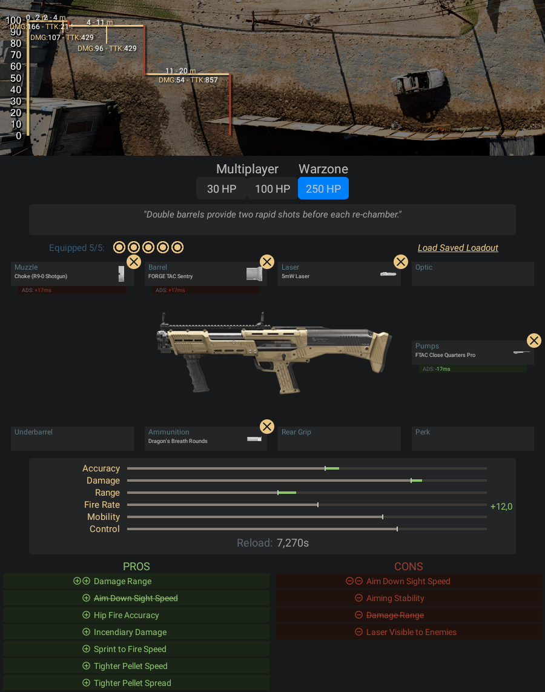

Escopeta de cano duplo que dispara dois tiros rápidos antes de cada bombeio.
- Pontos Positivos:
- -A curta distância essa arma é o maior perigo de todo o Warzone
- -Faz os teus inimigos chorarem todas as vezes que eles morrem
- -Até a 11 metros esse arma tem muito dano, então você pode atirar
- em algumas distâncias de curta até a média distância
- -Ela tem dois tiros rápidos no pente, e se você pega o timing desses tiros
- as suas batalhas em curtas distâncias serão as coisas mais fáceis desse jogo
- Pontos Negativos:
- -Não tem uma mobilidade tão grande quanto a outra escopeta da lista
Informações e dicas de como fazer uma classe da Escopeta R9-0:
Acessórios para Escopeta R9-0:
- Boca - Estrangulador
- Cano - Sentinela FORGE TAC
- Laser - Laser de 5Mw
- Coronha - FTAC Close Quarters Pro
- Munição - Balas Bafo de Dragão